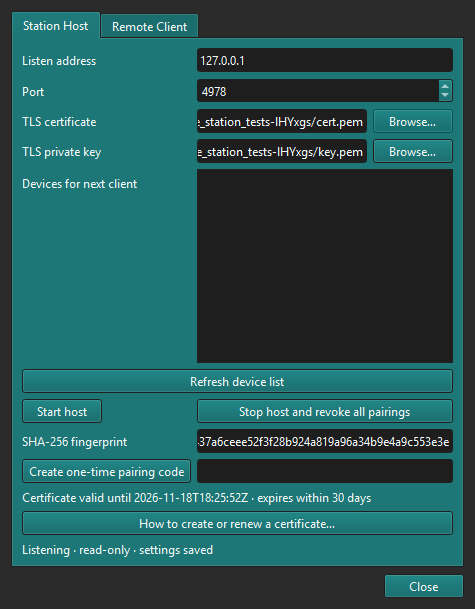

Set up the desktop Station Host first
Do these steps on the computer physically connected to the WN-2. Have your certificate and private key ready before pairing clients.
- Connect the WN-2 USB cable and power the meter. In RayWn2App, select Discover, choose its D2XX or VCP entry, then Connect. Check that the local meter is Live. Select the correct coupler models in Device Settings.
- Open Tools → Remote Station → Station Host.
- Enter this computer's LAN or VPN address under Listen address. For example, if the host's address is 192.168.1.50, enter that address. Leave port 47827 unless your installation uses a different port. Allow that TCP port through the host firewall for the intended trusted network if required.
- Use Browse to select the PEM certificate and its matching private key. Check the certificate expiry message, then select Start host. Look for Listening · read-only. Successful settings are remembered when you reopen the app.

Actual Station Host dialog during an isolated test. This example listens on the same computer. Use your host's network address for a separate client. Select image to enlarge.

Give a client access
- Under Devices for next client, select the connected WN-2 identities that operator may monitor. Use Refresh device list if you connected a meter after opening this dialog. Ctrl-click to select several devices.
- Compare the displayed SHA-256 fingerprint with the client operator through a trusted channel. The fingerprint identifies this host's certificate.
- When the client operator is ready, select Create one-time pairing code. Give that operator the host address, port and code. A code lasts two minutes and can be used once. Creating another code replaces the unused code.
- Follow Pair a Remote Client. For each additional client, select its devices and create a new code.
Keeping the host available
Closing the Remote Station dialog leaves the host running. Keep the station app open and the computer awake. The desktop host starts when you select Start host. Closing the application stops it. Its pairings last for the running host session. Stop host and revoke all pairings closes the listener and requires new client pairings.
The Pi service provides boot startup, retained host pairings and server-side CSV history. Its configuration is separate from the desktop host.
For direct access by monitoring software, see the optional read-only HTTPS / JSON API.